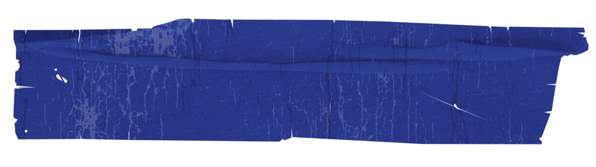

Программа-вымогатель шифрует файлы на компьютере жертвы и требует выкуп за восстановление доступа.Это одна из самых разрушительных форм нкибератак, так как она может затронуть как частных лиц, так и крупные компании.
Вирусы-шифровальщики появились хронологически после винлокеров. Их распространение связано с UAC и оперативными исправлениями Microsoft: прописаться в системе без ведома пользователей становится сложнее, но компьютер-то предназначен, чтобы работать с пользовательскими файлами. Их можно испортить даже без административных привилегий.
«Киберкриминальные синдикаты: истории самых известных хакерских группировок мира»
Киберпреступность становится одной из наиболее актуальных угроз XXI века, поскольку она затрагивает все сферы жизни – от финансов до национальной безопасности. Одной из ключевых особенностей современной киберпреступной среды является появление организованных группировок, действующих в киберпространстве. Эти группировки представляют собой сложные структуры, объединяющие высококвалифицированных специалистов в области программирования, сетевых технологий и социальной инженерии. Их цель – получение финансовой выгоды путем хищения данных, шантажа, мошенничества и других противоправных действий.
Anonymous
Anonymous — одна из самых известных хакерских группировок в мире, представляющая собой децентрализованное объединение анонимных участников, действующих под общим именем. Группа стала символом цифрового протеста, выступая против цензуры, коррупции, нарушений прав человека и социальной несправедливости.
“Мы — Легион. Мы не прощаем. Мы не забываем. Oжидайте нас.”
Anonymous возникли в начале 2000-х годов на форумах 4chan — платформе, известной своей анонимностью и свободой выражения. Сначала участники занимались преимущественно розыгрышами и шутливыми акциями. Однако со временем группа эволюционировала в мощное движение, проводя кибератаки в рамках борьбы за социальные и политические цели.
Знаковые операции
- Operation Payback (2010): Ответ на попытки закрытия сайтов для обмена файлами. В рамках акции подверглись атакам сайты MPAA, RIAA, а также компании, отказавшиеся сотрудничать с Wikileaks (Visa, Mastercard и PayPal)
- Арабская весна (2011): Anonymous поддержали революционные движения в Тунисе, Египте и других странах, атакуя правительственные сайты и помогая активистам обходить цензуру в интернете.
- Occupy Wall Street (2011): Поддержка протестов против экономического неравенства. Группа распространяла информацию, организовывала акции и атаковала сайты крупных корпораций.

APT28 (Fancy Bear)
APT28, также известная как Fancy Bear, является одной из самых известных и опасных хакерских группировок в мире. Она связывается с российской группировкой и подозревается в проведении множества кибератак, направленных на кибершпионаж, дезинформацию и вмешательство в международные дела. Деятельность APT28 значительно повлияла на глобальную кибербезопасность и геополитические отношения.
“У России есть только два союзника — её армия и флот”
Группа APT28 была впервые идентифицирована экспертами по кибербезопасности в середине 2000-х годов. Она получила название Advanced Persistent Threat 28 (APT28) из-за своей способности проводить долгосрочные и сложные атаки. Название "Fancy Bear" связано с принятым в индустрии обозначением: "Bear" используется для группировок, ассоциируемых с Россией.Атаки в рамках борьбы за социальные и политические цели.
Знаковые операции
- Вмешательство в выборы в США (2016)
Группировка обвиняется во взломе серверов Национального комитета Демократической партии (DNC) и публикации украденных данных через платформы, такие как WikiLeaks. Эти действия стали частью кампании, направленной на вмешательство в президентские выборы.
- Кибершпионаж в Европе
APT28 проводила атаки на политические и военные учреждения в Европе, включая НАТО, правительства Германии, Франции и других стран. Их целью было получение секретной информации, связанной с обороной и дипломатией.
- Атака на WADA (2016)
После скандала с допингом в российском спорте группа взломала серверы Всемирного антидопингового агентства (WADA) и опубликовала данные о западных спортсменах, чтобы отвлечь внимание от российских нарушений.


.gif)